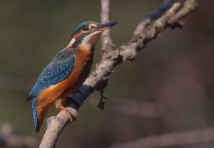

Le Martin Pêcheur
Le martin-pêcheur est à peine plus grand qu'un moineau. La partie supérieure est fortement
colorée de turquoise et de bleu, les ailes sont plus foncées. Les joues et le dessous sont
roux-orange, la gorge est blanche. La femelle porte de l'orange sur le bas de la cuisse.
Lorsqu'il est aperçu en vol, le plumage reflète des tons bleu et orange brillants qui captent la
lumière. C'est un oiseau timide, que l'on entend bien avant de le voir : son appel est sonore,
aigu et strident, portant très loin.
Comportement
C'est un petit bijou d'oiseau, timide et prudent dans son approche des humains. Cet oiseau
superbement coloré est une parfaite machine à pêcher sous l'eau, plongeant avant de ressortir, sa
proie serrée dans son bec puissant. Il se perche ou plane au-dessus de la surface de l'eau en
guettant les poissons. Il plonge ensuite pour capturer des poissons, des insectes, des larves et des
amphibiens.
Le martin-pêcheur visite souvent les jardins et les mares à la recherche de proies faciles, surtout
les deux ou trois premières heures qui suivent le lever du soleil. Pour l'apercevoir, cherchez un
éclair bleu et orange.
Habitat
Il faut le chercher autour d'un jardin possédant une mare très poissonneuse ou proche d'un lac, d'une
rivière ou d'un fleuve. Le martin-pêcheur se méfie des hommes, c'est pourquoi il préfère visiter le
jardin très tôt le matin. Pendant les hivers rudes, quand il est obligé de chercher de l'eau non
gelée, il peut apparaître à des endroits imprévisibles.
En hiver, il visite les zones littorales où il se nourrit de crevettes grises ou roses, de poissons
de roche, etc. Fréquente également les étangs de jardin où il apprécie les vairons et les épinoches.
Aire de répartition
Il niche dans toute la France et la Belgique en bordure des fleuves, rivières, canaux, lacs,
estuaires (plus spécialement en hiver), mais jamais en grand nombre, étant donné la forte mortalité
hivernale.